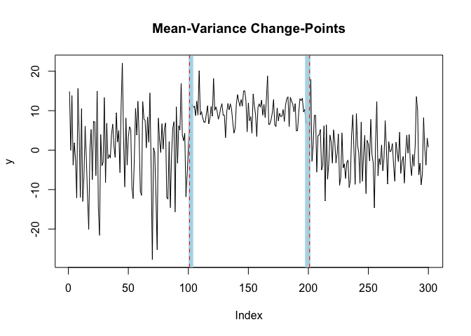

Fast Bayesian Inference for Change-Point Detection
mich is an R package that implements the Multiple Independent Change-Point (MICH) method introduced in Berlind, Cappello, Madrid Padilla (2025). The package’s main function mich() implements a backfitting procedure to identify changes in the mean and/or variance of a length \(T\) sequence of observations \(\mathbf{y}_{1:T}\). The mich.fit object returned by mich() provides a variational approximation to the posterior distribution of the change-points.
Installation
The development version of mich can be installed from GitHub using:
# install.packages("devtools")
devtools::install_github("davis-berlind/mich")Basic Usage
For an in-depth introduction check out Getting Started. The function mich() works by taking a vector or matrix of observations y and integers L, K, and J that specify the respective numbers of mean, variance, and joint mean and variance change-points in y. In the example below we sample a series with two changes in the mean and variance at times 101 and 201.
library(mich)
set.seed(222)
# generate univariate data with two mean-variance change-points
y = c(rnorm(100,0,10), rnorm(100,10,3), rnorm(100,0,6))
# fit two mean-variance change-points
fit = mich(y, J = 2)
summary(fit, level = 0.95)
#> Univariate MICH Model:
#>
#> ELBO: -227.315037808182; Converged: TRUE
#>
#> J = 2 MeanVar-SCP Component(s); 2 Detected Mean-Variance Change-Point(s):
#> change.points lower.0.95.credible.set upper.0.95.credible.set
#> 1 101 101 103
#> 2 201 198 201Plotting the estimated change-points and their 95% credible sets shows that mich() properly recovers the changes.
plot(fit, cs = TRUE, level = 0.95)